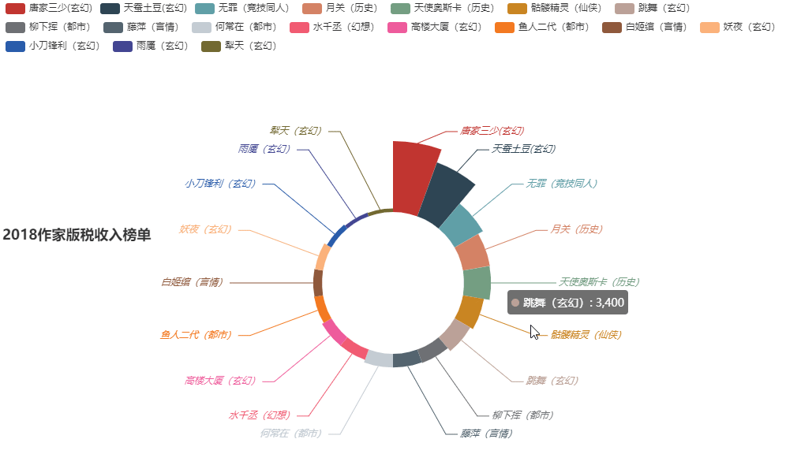

第一名是我们很多人都熟悉的唐家三少，主写玄幻类小说，笔者很喜欢玄幻小说中营造的仙侠世界，唐家三少的版税收入是13000万元，也就是1.3亿，可见这收益之高，当然这也与作者的知名度有关，再看看榜单，主写玄幻小说的作家有足足8位，可见玄幻字大众心中占了多大的位置，然后便是都市，都市类小说在近几年的受欢迎程度可谓水涨船高，有兴趣的可以去看看笔者的另一篇文章行业发展盛衰兴废，小说界中又谁主沉浮。都市占有3位，再然后是历史和言情各占两位，最后竞技同人、仙侠、幻想类小说各占一位。而最后一名是犁天，收入为660万元。
笔者这篇文章是想给各位普及网络小说在如今的行业中并不是那么不堪，而是不同凡响，小说受众多，类型多，进入门槛也不高，若你有点笔力，是不二之选。我会在另一篇文章中给大家讲述这么多年来小说世界谁主沉浮。